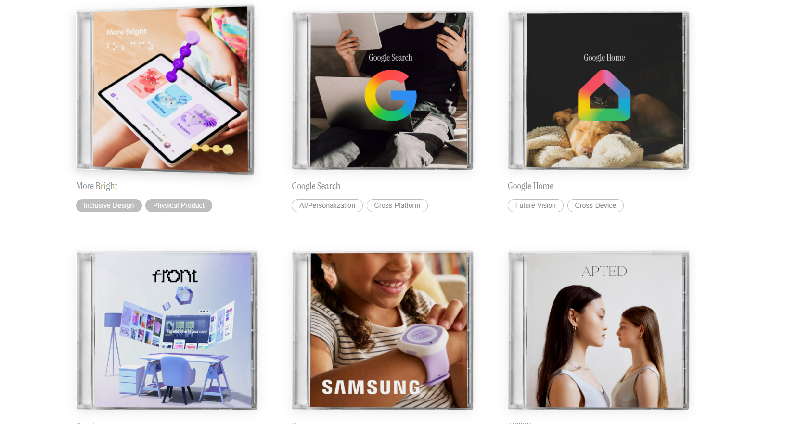

AuthForm
AI-enabled dashboard that helps physicians prepare insurer-ready ADHD medication approval requests and surface documentation risk factors before submission.
Long Story Short
I streamlined the ADHD medication approval process with an AI-enabled physician dashboard
AuthForm was designed to reduce preventable prior authorization delays by organizing payer-facing information before submission. The product helps physicians review ICD-10 codes, treatment requests, clinical rationale, and documentation risk factors in one structured workflow.
Payer Summary Cards
Organized ICD-10 codes, medication requests, and clinical rationale into insurer-ready summaries.
Risk Factors
Surfaced missing or weak documentation before requests were submitted.
Physician Control
Kept AI in a support role while physicians retained final review and approval.
How might we help physicians prepare accurate prior authorization requests without losing clinical context?
Clinical Workflow Inputs
To reduce preventable delays, I focused on missing rationale, unclear diagnosis support, and scattered documentation
The product direction was shaped around prior authorization friction, payer documentation expectations, and the need for physician review before submission. The biggest opportunity was turning scattered clinical information into a structured insurer-ready format earlier in the workflow.
Solution
I turned scattered clinical information into a structured payer-ready format
The final product included an AI-supported physician dashboard, payer summary cards, ICD-10 code organization, treatment request summaries, clinical rationale summaries, documentation risk factor alerts, and a physician review workflow before submission.
Process
I designed the AI layer around trust, review, and documentation quality
For AuthForm, the key product decision was keeping physicians in control. Instead of automating submission, the dashboard organizes risk signals and payer-ready summaries so physicians can review the request before anything leaves the workflow.
Risk Review
Flagged documentation gaps before they could become preventable denials.
Structured Cards
Grouped diagnosis codes, medication requests, and rationale into scan-friendly summaries.
Human Approval
Kept final judgment with the physician to protect clinical context and trust.
Impact
Clearer Requests
Helped physicians prepare stronger prior authorization summaries before submission.
Fewer Gaps
Reduced the chance of preventable documentation issues.
Trusted AI
Supported expert review instead of replacing human decision-making.
Reflection
What I learned
This project strengthened my ability to design around complex healthcare workflows where speed, accuracy, and trust all matter. It also helped me think more carefully about responsible AI product design.